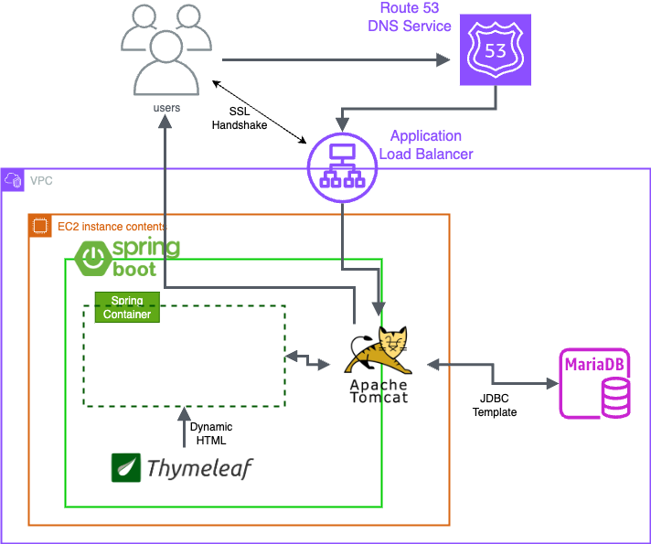
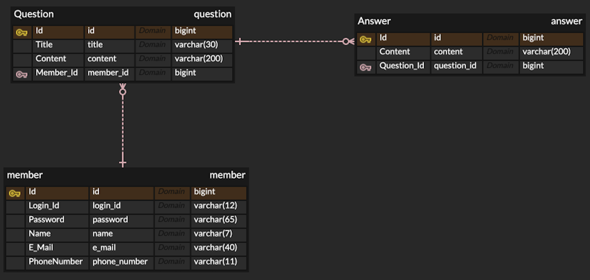

로그인, CRUD 기능이 있는 웹사이트 만들기
단순 눈에 보이는 기능 구현에만 한 것이 아닌 보이지 않는 부분 까지 신경 써서 만들었습니다.
로그인 기능을 구현 할때, 단순히 DB에 비밀번호 자체를 넣는 것이 아닌 sha-256 해쉬 알고리즘으로 변환후 저장을 해 보안에 신경을 썼고,
prepared statement만을 써서 SQL Injection에 대비, Thymeleaf Template Engine의 escaping 기술을 적극 활용하여 XSS에 대비하였습니다.
이뿐만 아니라 DB정규화, PRG Pattern, 동시성 문제들을 생각하며 프로그래밍 했습니다.
자세한 사항은 GitHub 버튼을 눌러주세요.